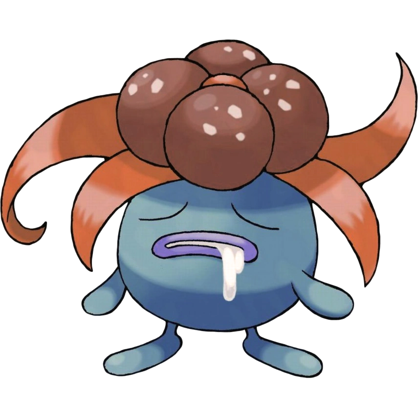

KANTO POKÉDEX
← 포켓몬 목록으로
#044

냄새꼬
풀
독
잡초 포켓몬
특성
엽록소
악취 (숨겨진 특성)
울음소리
포획률 & 성비
포획률
120 / 255
성비
♂ 50%
50% ♀
생태
뚜벅초에서 진화한 포켓몬. 위험을 느끼면 암술이 내는 구린 냄새가 더 강해지지만 마음이 평안할 때는 구린 냄새를 내지 않는다. 라플레시아로 진화한다.
← #043 뚜벅쵸
#045 라플레시아 →